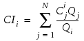
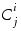

Aisle Group CI Calculation
Cold Aisle Group Calculation
In this example, tiles and Rack flow devices are grouped together with a Cold Aisle Group name.
The CI calculation is performed as follows, refer to Figure 1:
As a post-processing solution, the software assigns a single concentration value (for example, Ctiles = 1) to the local cooling airflow devices and solves for concentration only.
The concentration is determined at each rack inlet in the group.
CI values are calculated from:

where:
CIi is the Capture Index of Rack i.
Ci is the concentration at the Rack i inlet.
Hot Aisle Group Calculation
In this example, Coolers and Rack flow devices are grouped together with a Hot Aisle Group name.
The CI calculation is performed as follows, refer to Figure 2:
As a post-processing solution, the software assigns a unique concentration to each rack exhaust airflow (for example, Ci = 1) and solves for concentration for each rack in sequence.
The concentration of each species from each rack is determined at the defined cooler inlets in the group.
CI values are calculated from:
where:
 is the concentration of species i computed at the inlet of Cooler (or return vent) j.
Qi is the volumetric airflow rate through Rack i.
Qj is the volumetric airflow rate through Cooler (or return vent) j.
N is the number of coolers (or return vents) in a defined hot aisle group.